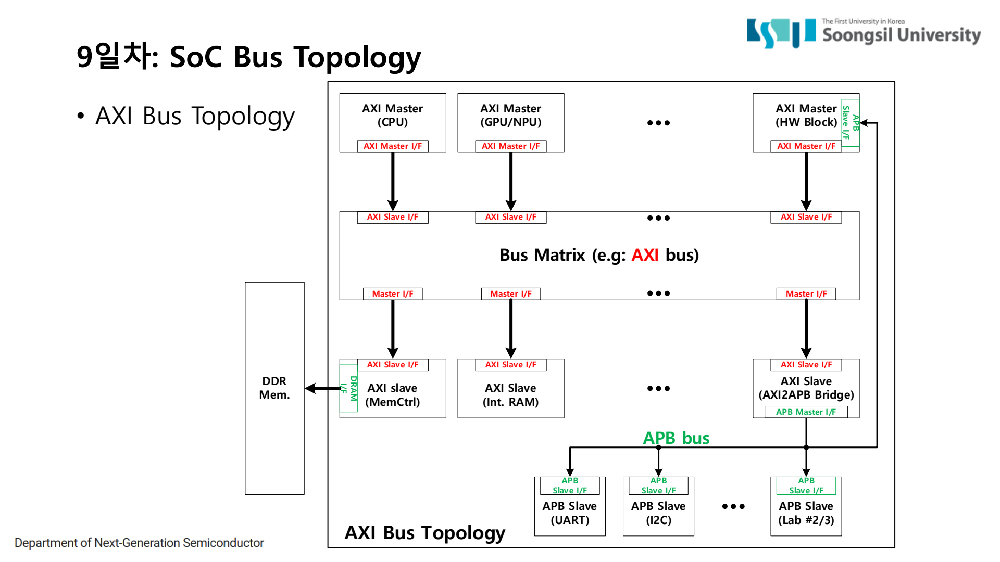
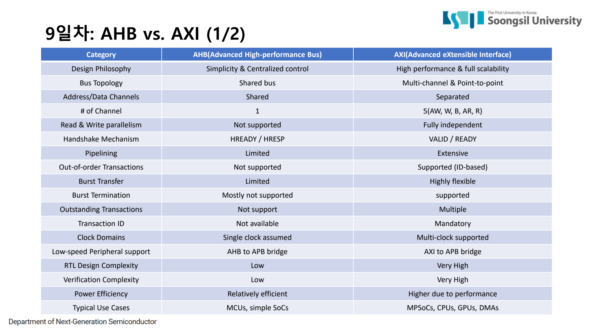
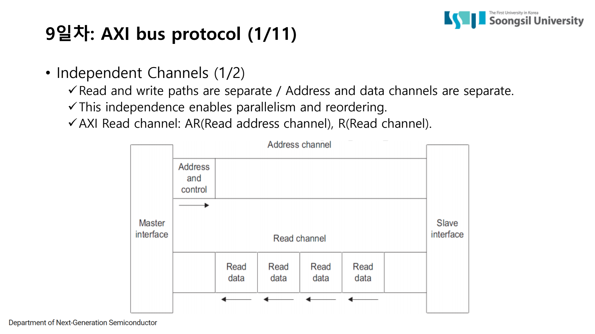
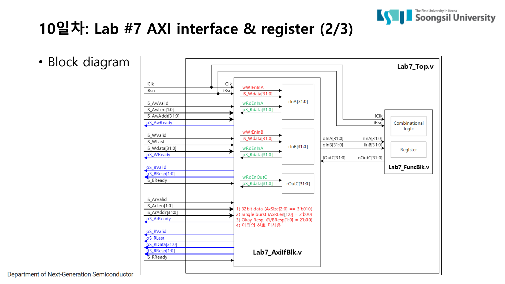
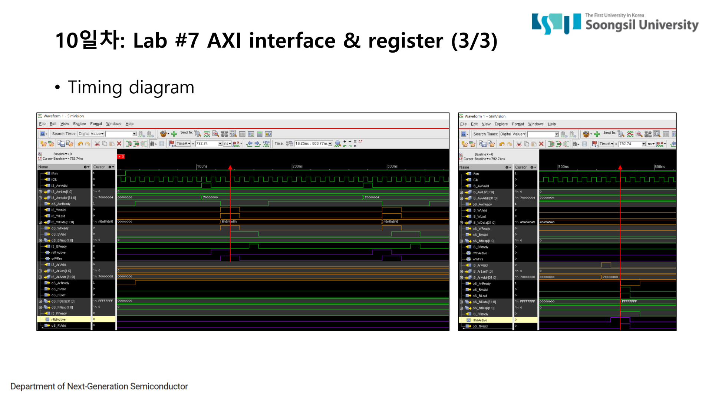

3. AXI Channel Bus
AXI(Advanced eXtensible Interface)는 고성능 SoC에서 CPU, DMA, accelerator, memory controller 같은 블록을 연결하기 위한 channel 기반 bus protocol이다. AHB가 하나의 bus 위에서 address phase와 data phase를 겹치는 구조라면, AXI는 write 주소, write data, write 응답, read 주소, read data를 서로 다른 channel로 분리한다. 이 페이지는 AXI의 5개 channel과 VALID/READY handshake, 그리고 Lab7 AXI slave RTL 구현을 위키형으로 정리한다.
3.1 AXI는 왜 AHB보다 복잡한가
AXI가 복잡해 보이는 이유는 신호 수가 많아서만은 아니다. AXI는 address, data, response를 독립 channel로 분리해서 각 channel이 자기 handshake로 움직이게 한다. 이 구조 덕분에 write address와 write data의 timing을 분리할 수 있고, read와 write도 독립적으로 진행될 수 있다. 더 큰 시스템에서는 outstanding transaction, burst, ID 기반 response 같은 기능으로 성능을 높일 수 있다.
Lab7에서 모든 AXI 고급 기능을 전부 구현한 것은 아니지만, AXI를 읽는 기본 관점은 그대로 적용된다. “주소를 받았는가”, “data를 받았는가”, “응답을 돌려줬는가”를 같은 cycle에서 보지 않고 channel별로 나누어 봐야 한다.


3.2 AXI의 5개 channel
| Channel | 주요 신호 | 역할 | Lab7/최종 프로젝트에서 본 포인트 |
|---|---|---|---|
| AW | AWVALID, AWREADY, AWADDR, AWLEN | write할 주소와 burst 정보를 전달 | 주소 handshake가 끝나야 write target address가 확정된다. |
| W | WVALID, WREADY, WDATA, WLAST | write data beat를 전달 | 주소와 data는 별도 channel이므로 W handshake를 따로 확인해야 한다. |
| B | BVALID, BREADY, BRESP | write transaction 결과를 반환 | write가 끝났다는 응답이다. Lab에서는 OKAY(2'b00)를 사용했다. |
| AR | ARVALID, ARREADY, ARADDR, ARLEN | read할 주소와 burst 정보를 전달 | read path의 시작점이다. |
| R | RVALID, RREADY, RDATA, RRESP, RLAST | read data와 response를 반환 | RVALID/RREADY handshake와 RLAST를 함께 봐야 read가 닫힌다. |

3.3 VALID/READY handshake 규칙
AXI에서 전송은 VALID와 READY가 같은 cycle에 동시에 1일 때만 성립한다. VALID는 보내는 쪽이 “지금 이 channel의 정보가 유효하다”고 말하는 신호이고, READY는 받는 쪽이 “지금 받을 수 있다”고 말하는 신호다. VALID만 올라가거나 READY만 올라가면 아직 handshake가 아니다.
- AW handshake: write address가 slave에 전달된다. 이때 write 대상 주소를 저장한다.
- W handshake: write data가 slave에 전달된다. WLAST가 있으면 마지막 beat임을 표시한다.
- B handshake: slave가 BRESP로 write 결과를 반환하고 master가 BREADY로 받는다.
- AR handshake: read address가 slave에 전달된다. 이때 read 대상 주소를 저장한다.
- R handshake: slave가 RDATA/RRESP/RLAST를 반환하고 master가 RREADY로 받는다.
파형을 볼 때의 기준
AXI 파형은 “AWVALID가 보였으니 write가 됐다”처럼 읽으면 안 된다. AWVALID와 AWREADY가 같은 cycle에 만났는지, WVALID와 WREADY가 별도로 만났는지, 마지막에 BVALID/BREADY가 닫혔는지를 차례로 봐야 한다. read도 AR과 R을 분리해서 봐야 한다.
3.4 Lab7 RTL: AXI slave register block
Lab7은 AXI slave interface를 가진 register block이다. register map은 0x7000_0000 입력 A, 0x7000_0004 입력 B, 0x7000_0008 출력 C다. 내부 function은 A+B 결과를 출력 C로 만드는 단순한 연산이지만, 이 Lab의 핵심은 add가 아니라 AXI channel을 통해 register access를 처리하는 방법이다.

write에서는 AW handshake로 주소를 저장하고, W handshake에서 들어온 WDATA를 저장된 주소에 맞는 register에 기록한다. read에서는 AR handshake로 주소를 저장하고, R channel에서 주소에 맞는 값을 RDATA로 내보낸다. response는 정상 동작 기준 OKAY(2'b00)를 사용한다.
assign wAwFire = iS_AwValid && oS_AwReady;
assign wWFire = iS_WValid && oS_WReady;
assign wBFire = oS_BValid && iS_BReady;
assign wArFire = iS_ArValid && oS_ArReady;
assign wRFire = oS_RValid && iS_RReady;if (wAwFire) begin
rWrActive <= 1'b1;
rWrAddr <= {iS_AwAddr[31:2], 2'b00};
rWrBeatsLeft <= {1'b0, iS_AwLen} + 3'd1;
end
if (wWFire && rWrActive) begin
case (rWrAddr)
32'h7000_0000: oInA <= iS_WData;
32'h7000_0004: oInB <= iS_WData;
default: ;
endcase
end
if (rRdActive && !oS_RValid) begin
case (rRdAddr)
32'h7000_0000: oS_RData <= oInA;
32'h7000_0004: oS_RData <= oInB;
32'h7000_0008: oS_RData <= iOutC;
default: oS_RData <= 32'h0;
endcase
end
wAwFire, wWFire, wArFire, wRFire 조건이 이 타이밍을 검증하는 기준이다.
3.5 파형에서 무엇을 검증했는가
AXI 검증에서는 각 channel의 handshake가 독립적으로 성립하는지 확인했다. AW/W/B가 write transaction을 완성하고, AR/R이 read transaction을 완성하는지, RLAST와 response가 올바르게 나오는지를 파형으로 봤다. 이 관점이 최종 AXI-to-APB Bridge에서 write FSM과 read FSM을 따로 구성하는 기준이 된다.